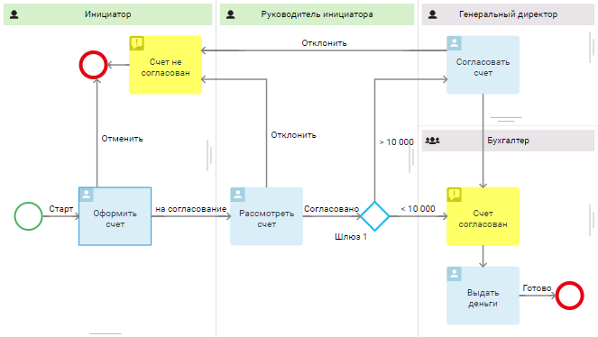
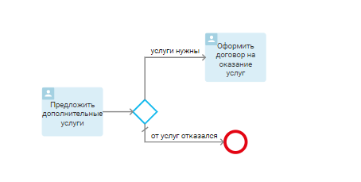
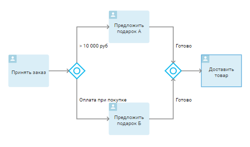
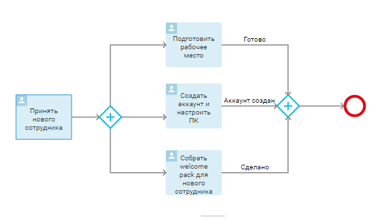
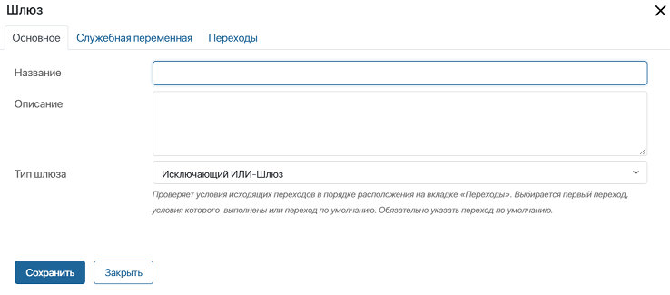
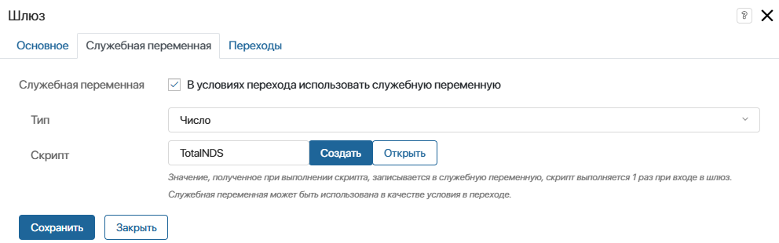
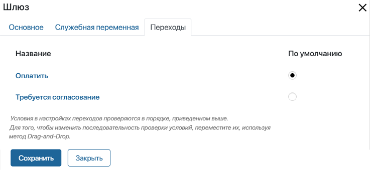
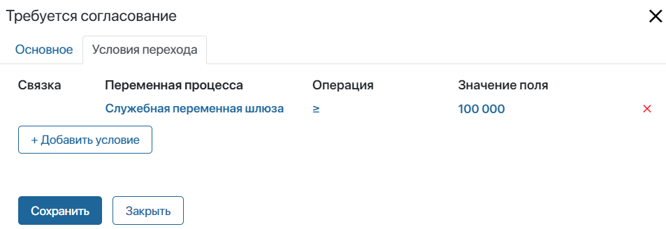
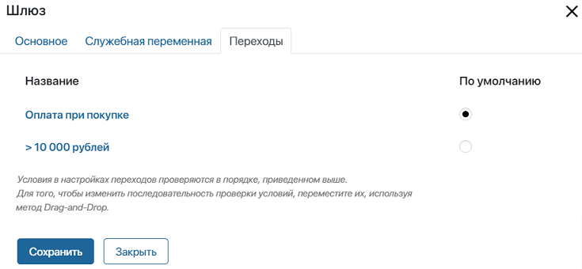

Шлюзы представляют собой точки принятия решения в процессе. Они используются для того, чтобы направить процесс по той или иной ветке в зависимости от определённых условий.
Например, если в счёте указана крупная сумма, то его согласует руководитель сотрудника, оформившего счёт, а также генеральный директор. Если же сумма незначительная, заявителю выдадут деньги сразу после одобрения руководителя.

Исключающий шлюз
Исключающий шлюз направляет процесс только по одному исходящему переходу.
Рассмотрим подробнее, как это работает. Сначала вы задаёте условия для нескольких исходящих переходов. Подробнее о том, как это сделать, читайте в статье «Переходы».
Как только процесс достигнет шлюза, заданные условия будут проверены. Выбирается та ветка процесса, условие которой выполнилось. Порядок проверки условий задаётся в настройках шлюза на вкладке Переходы.
начало внимание
Для исключающего шлюза с условием типа ИЛИ обязательно должен быть указан переход по умолчанию. По нему будет направлен ход процесса, если заданные условия не выполнятся.
конец внимание
Например, в процессе продаж менеджер может предложить клиенту дополнительные услуги. В зависимости от решения покупателя процесс либо завершается, либо сотруднику назначается задача оформить договор.

Неисключающий шлюз
Неисключающий шлюз направляет процесс по одному или нескольким исходящим переходам, для которых выполняется условие.
Например, после того, как оператор примет заказ, процесс может развиваться следующим образом:

- если сумма заказа >10 000 рублей, оператор добавит к заказу подарок А;
- если клиент оплачивает товар при покупке, то ему предложат подарок Б;
- если выполнятся оба условия, перечисленные выше, покупатель получит два подарка;
- если не выполнится ни одно условие, операции со шлюзами будут пропущены, и оператор получит задачу Доставить товар.
начало внимание
Все ветки процесса, исходящие из неисключающего шлюза, должны замыкаться на такой же шлюз.
конец внимание
Параллельный шлюз
Параллельный шлюз направляет процесс по всем исходящим переходам. Этот шлюз отличается от описанных выше. Он не проверяет условия переходов, а разделяет процесс на несколько потоков, которые будут исполняться одновременно.
Например, после того, как новый сотрудник будет принят, офис-менеджер должен подготовить рабочее место, системный администратор — создать аккаунт в корпоративной системе, а HR-специалист — собрать приветственный пакет для новичка. Все эти задачи можно выполнять одновременно, поэтому для описания хода процесса выбирается параллельный шлюз.
начало внимание
Все ветви процесса, исходящие из параллельного шлюза, должны замыкаться на такой же шлюз.
конец внимание

Настройка шлюзов
Вы можете редактировать названия шлюзов, добавлять описание, изменять тип, а также настраивать порядок проверки условий переходов. Чтобы открыть окно с настройками, дважды нажмите на шлюз на схеме процесса.
Вкладка «Основное»

- Название — укажите наименование шлюза, которое будет отображаться на схеме процесса;
- Описание — опишите принцип работы шлюза;
- Тип шлюза — выберите опцию из выпадающего списка, чтобы изменить тип шлюза.
Вкладка «Служебная переменная»
Вкладка Служебная переменная доступна только для исключающих и неисключающих шлюзов. Используя служебную переменную, можно определить, по какому переходу будет развиваться процесс. Значение служебной переменной рассчитывается при помощи скрипта.

Например, для бизнес-процесса согласования счёта можно создать служебную переменную Сумма с НДС. Если значение служебной переменной выше или равно 100 000 рублей, процесс пойдёт по переходу Требуется согласование. В остальных случаях процесс направится по ветке Оплатить.
Чтобы описанный пример выполнялся, задайте следующие настройки шлюза:
- Выберите опцию В условиях перехода использовать служебную переменную.
- Укажите тип переменной. Вы можете использовать только переменные типа Строка, Число и Выбор «да/нет». В данном случае это Число, так как переменная содержит сумму заказа с НДС.
- Добавьте скрипт, который будет рассчитывать значение переменной. Для этого выберите существующий скрипт из списка или нажмите Создать. Укажите название, нажмите Сохранить, а затем — Открыть. Откроется вкладка Скрипты, где можно добавить свой скрипт, используя язык TypeScript. Подробнее про написание скриптов вы можете прочитать в справке ELMA365 TS SDK.
начало внимание
Использование констант Global или Namespace в скриптах ограничивает экспорт компонентов системы. Подробнее об этом читайте в статье «Глобальные константы в скриптах».
конец внимание
- Сохраните и проверьте скрипт. Обнаруженные ошибки подчеркнутся в редакторе. Скрипт с ошибками опубликовать нельзя.
- После публикации скрипт выполнится, и размер суммы с НДС рассчитается автоматически, когда процесс дойдёт до шлюза.
В нашем примере, если сумма счёта менее 100 000 рублей, процесс должен двигаться по переходу Оплатить. Во всех остальных случаях процесс развивается по переходу Требуется согласование.
- Чтобы реализовать эту логику, задайте условия перехода. Для этого в окне настроек шлюза откройте вкладку Переходы.

- Укажите, что Оплатить является переходом по умолчанию.
- Нажмите на переход Требуется согласование, чтобы задать условие, при котором процесс пойдёт по данной ветке.
- В открывшемся окне перейдите на вкладку Условия перехода и нажмите кнопку + Добавить условие.

- Переменная процесса — выберите свойство Служебная переменная шлюза;
- Операция — укажите оператор сравнения для проверки условия;
- Значение поля — впишите нужное значение.
- Сохраните настройки.
Теперь при достижении шлюза значение переменной Сумма с НДС рассчитается автоматически с помощью заданного скрипта. Если значение окажется больше или равно 100 000, процесс пойдёт по переходу Требуется согласование.
Использование служебной переменной позволяет сделать карту процесса менее загруженной, потому что скрипт реализуется в шлюзе, а не добавляется на схему отдельным блоком.
Вкладка «Переходы»
Вкладка доступна только для исключающих шлюзов. Здесь вы можете задать порядок проверки условий. Также укажите переход по умолчанию, чтобы по нему направить процесс, если не выполнятся заданные условия. Нажав на название перехода, вы перейдёте к его настройкам.

Подробнее о том, как настраиваются условия, читайте в статье «Переходы». С применением шлюзов с одним или несколькими условиями переходов можно ознакомиться в статье «Примеры настройки переходов».
Исключающий шлюз в повторяющемся шаге
Исключающий шлюз можно использовать для действия, повторяющегося в бизнес-процессе несколько раз. Чтобы не допустить зацикленности процесса, такое действие не должно выполняться более 100 раз. Вы можете обойти это ограничение. Для этого в процессе используется таймер для постепенного запуска повторяющихся шагов. Подробнее об этом читайте в статье «Возможные ошибки по ходу процесса».